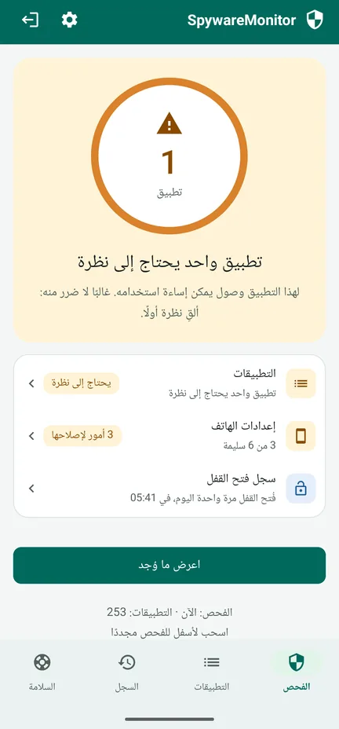
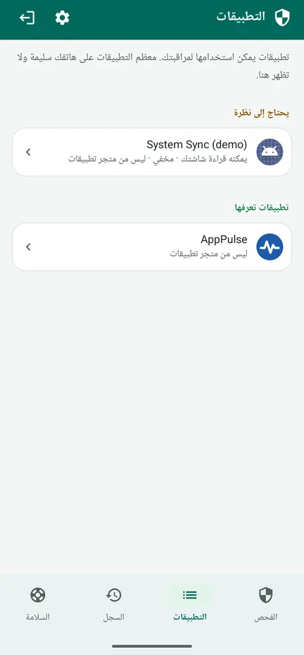
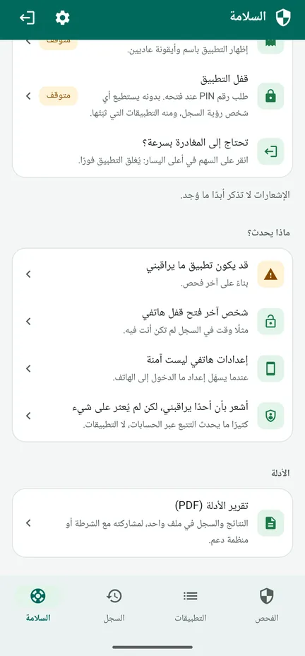
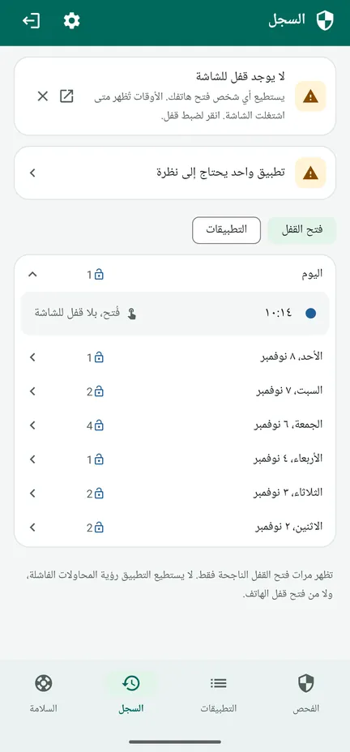

هل يراقب أحدٌ هاتفك؟
يفحص SpywareMonitor أي التطبيقات على هاتف Android يمكن استخدامها للتجسس عليك، ويشرح لك السبب بلغة بسيطة.
لكل من يخشى أن يتتبّعه شريك أو شريك سابق أو أي شخص آخر سرًّا عبر هاتفه. بلا إنترنت، ولا إعلانات، ولا حساب: لا شيء يغادر هاتفك.
احصل عليه من Google Play الشرح خطوة بخطوة (بالإنجليزية)
مجاني على Google Play لأجهزة Android 8 والأحدث، مع ترقية Pro اختيارية تدفع ثمنها مرة واحدة. متوفر بعشر لغات، منها العربية.

برامج الملاحقة المعروفة
132 برنامج تجسس وملاحقة، يُتعرَّف عليها بالاسم وبشهادة التوقيع.
التطبيقات المخفية
تطبيقات بلا أيقونة، أو باسم يوحي بأنها جزء من Android.
تطبيقات قادرة على المراقبة
تطبيقات تقرأ شاشتك أو إشعاراتك، أو تعمل كمشرف الجهاز.
إعدادات الهاتف
عدم وجود قفل للشاشة، أو تصحيح أخطاء USB، أو إعدادات أخرى تسهّل الدخول إلى هاتفك.
خطوات آمنة لما بعد ذلك
ما يمكنك فعله، بترتيب آمن، حتى لا تنبّه الشخص الآخر.
لا شيء يغادر هاتفك
لا إذن للوصول إلى الإنترنت: فلا إعلانات، ولا تتبّع، ولا حساب.
شاهد كيف يعمل
شاهد جولة مدتها 83 ثانية (بالإنجليزية): كيف يفحص التطبيق هاتفك، وماذا يعني البرتقالي والأحمر، وماذا تفعل بعد ذلك. أو تصفّح الشاشات. شاهده على YouTube



مجانًا: الفحص
- يفحص كل تطبيق، ويقارنه بقائمة برامج التجسس المعروفة
- البرتقالي: وصول يمكن إساءة استخدامه – غالبًا لا ضرر منه، فألقِ نظرة أولًا. الأحمر: برنامج تجسس معروف.
- الأسباب لكل تطبيق، ومن صنعه
- إعدادات الهاتف، ولكل منها زر لإصلاحه
- علامة تبويب «السلامة»: خطوات تناسب وضعك، بترتيب آمن
- «خروج سريع»: السهم في أعلى اليسار يغلق التطبيق فورًا
Pro: دفعة واحدة، بلا اشتراك
- الفحص التلقائي كل ساعة، بمفتاح واحد. الإشعار لا يذكر أبدًا ما وُجد – فقط اسم التطبيق و«انقر للفتح» – ويمكن تأخيره ساعة.
- سجل فتح القفل: متى فُتح قفل هاتفك، لتلاحظ إن استخدمه شخص آخر
- السجل: متى ثُبّت كل تطبيق، أو حصل على وصول، أو أُزيل
- تقرير الأدلة (PDF) بلغة التطبيق، لتعرضه على الشرطة أو على منظمة دعم
- التمويه والقفل: إظهار التطبيق باسم الملاحظات أو الطقس أو الوصفات أو الأجندة، مع رقم PIN أو بصمة الإصبع
السجل يُحفَظ في النسخة المجانية أيضًا. رسالة إيصال الشراء من Google وسجل الطلبات في Play يذكران اسم التطبيق.
قبل أن تزيل أي شيء
- إزالة برنامج التجسس قد تنبّه الشخص الذي ثبّته. فكّر في سلامتك أولًا.
- احتفظ بالأدلة: تقرير الأدلة، أو لقطات الشاشة، أو صور تلتقطها بهاتف آخر.
- تحدّث مع شخص تثق به، أو مع الشرطة، أو مع خط مساعدة، ويُفضَّل من هاتف لا يخضع للمراقبة. في معظم البلدان خط مساعدة مجاني لضحايا العنف الأسري أو الإساءة.
- غيّر كلمات المرور المهمة من جهاز آخر.
- إذا كنت في خطر داهم، فاتصل برقم الطوارئ المحلي.
علامة تبويب «السلامة» في التطبيق ترشدك خطوة بخطوة بحسب وضعك. اقرأ ما تفعله عند العثور على شيء (بالإنجليزية)، واحمِ التطبيق نفسه أولًا (بالإنجليزية): موّهه واقفله برقم PIN.
التفاصيل
كل ما يفحصه
- 132 برنامج ملاحقة معروفًا (الاسم وشهادة التوقيع)
- تطبيقات بلا أيقونة في درج التطبيقات
- تسهيل الاستخدام، والوصول إلى الإشعارات، ومشرف الجهاز
- تطبيقات مثبّتة من ملف أو من مصدر آخر بدلًا من متجر تطبيقات
- تركيبات خطرة، مثل الموقع في الخلفية مع الميكروفون والرسائل القصيرة
- قفل الشاشة، وتصحيح أخطاء USB، وخيارات المطورين، والتطبيقات المسموح لها بتثبيت تطبيقات أخرى، وهاتف يتحكم فيه شخص آخر
- علامات الروت في الهاتف، ولا تظهر إلا إذا وُجدت
خصوصية يمكنك التحقق منها
لا يملك SpywareMonitor إذن الوصول إلى الإنترنت، فلا يستطيع إرسال أي شيء إلى أي مكان. بياناته مستثناة من النسخ الاحتياطي السحابي. قائمة برامج التجسس المعروفة مدمجة في التطبيق وتُحدَّث معه. سياسة الخصوصية (بالإنجليزية).
صريح بشأن حدوده
لا يمكن لأي أداة فحص أن تضمن أن الهاتف نظيف بنسبة 100%. التطبيقات في الملف الشخصي للعمل، وبرامج التجسس على هاتف مُروَّت بإتقان، لا يراها أي تطبيق عادي. يخبرك SpywareMonitor إذا وجد علامات روت. ويمكن أيضًا تتبّعك عبر الحسابات، دون أي تطبيق.
اللغات والهواتف
10 لغات: العربية، والإنجليزية، والنرويجية، والهولندية، والألمانية، والفرنسية، والإسبانية، والبولندية، والصينية، والهندية. Android 8 والأحدث.
أسئلة شائعة
كيف أعرف إن كان على هاتفي Android برنامج تجسس؟
ابحث عن تطبيقات لا تعرفها: مخفية من درج التطبيقات، أو تستطيع قراءة شاشتك (تسهيل الاستخدام) أو إشعاراتك، أو تعمل كمشرف الجهاز، أو ثُبّتت من ملف بدلًا من Play Store. يفحص SpywareMonitor كل ذلك، ويقارن تطبيقاتك بقائمة من 132 برنامج ملاحقة معروفًا.
هل يرسل SpywareMonitor بياناتي إلى أي مكان؟
لا. لا يملك التطبيق إذن الوصول إلى الإنترنت، فلا يمكن لأي شيء أن يغادر هاتفك. لا حساب، ولا إعلانات، ولا تحليلات.
هل يجب أن أزيل برنامج التجسس فورًا؟
قد تنبّه إزالتُه الشخصَ الذي ثبّته. فكّر في سلامتك أولًا، واحتفظ بالأدلة، وتحدّث مع شخص تثق به أو مع الشرطة أو مع خط مساعدة، ويُفضَّل من هاتف لا يخضع للمراقبة.
هل يكتشف SpywareMonitor كل أنواع برامج التجسس؟
لا يمكن لأي أداة فحص أن تعد بذلك. التطبيقات في الملف الشخصي للعمل، وبرامج التجسس على هاتف مُروَّت، لا يراها أي تطبيق عادي. SpywareMonitor صريح في ذلك، ويُظهر لك ما يستطيع فحصه.
هل SpywareMonitor مجاني؟
الفحص وإعدادات الهاتف وخطوات السلامة مجانية. أما Pro فدفعة واحدة بلا اشتراك، ويضيف الفحص التلقائي مع إشعارات متكتّمة، والسجل، وسجل فتح القفل، وتقرير الأدلة بصيغة PDF، وتمويه التطبيق وقفله برقم PIN.
هل يمكنني إخفاء SpywareMonitor على هاتفي؟
مع Pro يمكنك تمويه التطبيق باسم الملاحظات أو الطقس أو الوصفات أو الأجندة، وقفله برقم PIN. إشعاراته لا تذكر أبدًا ما وُجد. والسهم في أعلى اليسار يغلق التطبيق فورًا. لكن رسالة إيصال الشراء من Google وسجل الطلبات في Play يذكران اسم التطبيق.
أشعر أنني مراقَب، لكن لم يُعثر على شيء. ماذا أفعل؟
كثيرًا ما يحدث التتبّع عبر الحسابات، لا عبر التطبيقات. أوقف مشاركة الموقع في خرائط Google، وتحقّق من الأجهزة المرتبطة بحساب Google، ومن بريد الاسترداد ورقم الاسترداد، وابحث عن جهاز تتبّع مخفي. أجرِ تغييرات الحساب من جهاز آخر.
أدلة: برامج التجسس على Android
مساعدة خطوة بخطوة
تطبيقات أخرى من Nordic Appworks
UpdateMonitor — سجل لكل تحديث وتثبيت وإزالة للتطبيقات على هاتفك، مع تغييرات الأذونات. RebootMonitor — متى أُعيد تشغيل هاتفك آخر مرة. ومثل SpywareMonitor: يعملان دون إنترنت وبلا إعلانات.
تواصل معنا
للأسئلة والملاحظات: support@spywaremonitor.app
قائمة برامج الملاحقة المعروفة مأخوذة من stalkerware indicators التابعة لـ Echap، بموجب ترخيص CC BY 4.0.